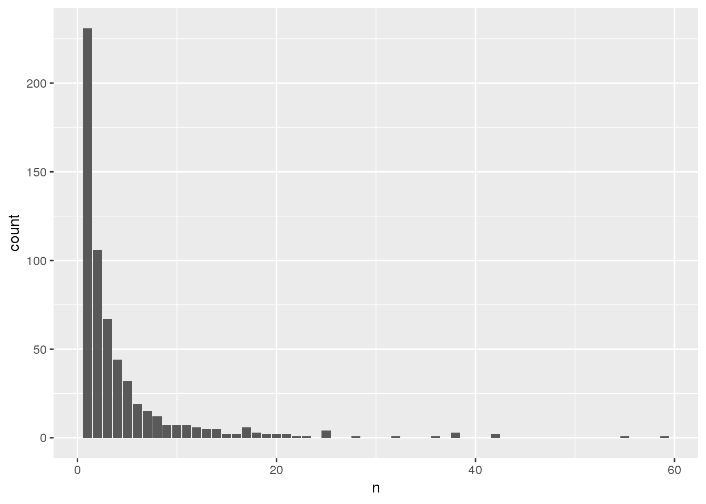

6 Association tests
Since TOPMed has many studies with related participants, we focus on linear mixed models. Logistic mixed models are also possible using GENESIS, see the GMMAT paper.
6.1 Null model
The first step in an association test is to fit the null model. We will need an AnnotatedDataFrame with phenotypes, and a GRM. We have a sample annotation with a sample.id column matched to the GDS file, and a phenotype file with subject_id. (In this example, we use the 1000 Genomes IDs for both sample and subject ID.) For TOPMed data, it is also important to match by study, as subject IDs are not unique across studies.
# sample annotation
workshop.path <- "https://github.com/UW-GAC/topmed_workshop_2018/raw/master"
sampfile <- "data/sample_annotation.RData"
if (!dir.exists("data")) dir.create("data")
if (!file.exists(sampfile)) download.file(file.path(workshop.path, sampfile), sampfile)
annot <- TopmedPipeline::getobj(sampfile)
library(Biobase)
head(pData(annot))## sample.id subject.id Population Population.Description sex
## 1 HG00096 HG00096 GBR British in England and Scotland M
## 2 HG00097 HG00097 GBR British in England and Scotland F
## 3 HG00099 HG00099 GBR British in England and Scotland F
## 4 HG00100 HG00100 GBR British in England and Scotland F
## 5 HG00101 HG00101 GBR British in England and Scotland M
## 6 HG00102 HG00102 GBR British in England and Scotland F
## status
## 1 0
## 2 1
## 3 0
## 4 1
## 5 0
## 6 0# phenotypes by subject ID
phenfile <- "data/phenotype_annotation.RData"
if (!file.exists(phenfile)) download.file(file.path(workshop.path, phenfile), phenfile)
phen <- TopmedPipeline::getobj(phenfile)
head(pData(phen))## subject_id sex age height study
## 1 HG00096 M 47 165.3 study_1
## 2 HG00102 F 49 169.1 study_1
## 3 HG00112 M 46 167.9 study_1
## 4 HG00114 M 49 169.5 study_1
## 5 HG00115 M 35 161.1 study_1
## 6 HG00116 M 37 182.2 study_1varMetadata(phen)## labelDescription
## subject_id subject identifier
## sex subject's sex
## age age at measurement of height
## height subject's height in cm
## study study identifier# merge sample annotation with phenotypes
library(dplyr)
dat <- pData(annot) %>%
left_join(pData(phen), by=c("subject.id"="subject_id", "sex"="sex"))
meta <- bind_rows(varMetadata(annot), varMetadata(phen)[3:5,,drop=FALSE])
annot <- AnnotatedDataFrame(dat, meta)
save(annot, file="data/sample_phenotype_annotation.RData")
# load the GRM
data.path <- "https://github.com/UW-GAC/analysis_pipeline/raw/master/testdata"
grmfile <- "data/grm.RData"
if (!file.exists(grmfile)) download.file(file.path(data.path, basename(grmfile)), grmfile)
grm <- TopmedPipeline::getobj(grmfile)
# the row and column names of the covariance matrix must be set to sample.id
rownames(grm$grm) <- colnames(grm$grm) <- grm$sample.idWe will test for an association between genotype and height, adjusting for sex, age, and study as covariates. If the sample set involves multiple distinct groups with different variances for the phenotype, we recommend allowing the model to use heterogeneous variance among groups with the parameter group.var. We saw in a previous exercise that the variance differs by study.
library(GENESIS)
nullmod <- fitNullModel(annot, outcome="height", covars=c("sex", "age", "study"),
cov.mat=grm$grm, group.var="study", verbose=FALSE)
save(nullmod, file="data/null_model.RData")We also recommend taking an inverse normal transform of the residuals and refitting the model. This is done separately for each group, and the transformed residuals are rescaled. See the full procedure in the
pipeline documenation.
6.2 Single-variant tests
Single-variant tests are the same as in GWAS. We use the assocTestSingle function in GENESIS. First, we have to create a SeqVarData object including both the GDS file and the sample annotation containing phenotypes. We then create a SeqVarBlockIterator object to iterate over blocks of variants.
library(SeqVarTools)
gdsfile <- "data/1KG_phase3_subset_chr1.gds"
if (!file.exists(gdsfile)) download.file(file.path(data.path, basename(gdsfile)), gdsfile)
gds <- seqOpen(gdsfile)
seqData <- SeqVarData(gds, sampleData=annot)
iterator <- SeqVarBlockIterator(seqData, verbose=FALSE)
assoc <- assocTestSingle(iterator, nullmod)## # of selected samples: 1,126head(assoc)## variant.id chr pos allele.index n.obs freq Score
## 1 1 1 970546 1 1126 0.0039964476 -0.10912333
## 2 2 1 985900 1 1126 0.0492895204 -1.23670370
## 3 3 1 1025045 1 1126 0.0004440497 -0.20904504
## 4 4 1 1265550 1 1126 0.0008880995 -0.09936591
## 5 5 1 1472676 1 1126 0.0071047957 0.25263905
## 6 6 1 1735725 1 1126 0.0022202487 -0.10530409
## Score.SE Score.Stat Score.pval
## 1 0.26797312 -0.4072174 0.68384830
## 2 0.74178862 -1.6671915 0.09547633
## 3 0.09041046 -2.3121776 0.02076790
## 4 0.09771658 -1.0168786 0.30921116
## 5 0.37957076 0.6655915 0.50567227
## 6 0.17644277 -0.5968173 0.55062937We make a QQ plot to examine the results.
library(ggplot2)
qqPlot <- function(pval) {
pval <- pval[!is.na(pval)]
n <- length(pval)
x <- 1:n
dat <- data.frame(obs=sort(pval),
exp=x/n,
upper=qbeta(0.025, x, rev(x)),
lower=qbeta(0.975, x, rev(x)))
ggplot(dat, aes(-log10(exp), -log10(obs))) +
geom_line(aes(-log10(exp), -log10(upper)), color="gray") +
geom_line(aes(-log10(exp), -log10(lower)), color="gray") +
geom_point() +
geom_abline(intercept=0, slope=1, color="red") +
xlab(expression(paste(-log[10], "(expected P)"))) +
ylab(expression(paste(-log[10], "(observed P)"))) +
theme_bw()
}
qqPlot(assoc$Score.pval)
6.3 Exercises
Logistic regression:
fitNullModelcan use a binary phenotype as the outcome variable by specifying the argumentfamily=binomial. Use thestatuscolumn in the sample annotation to fit a null model for simulated case/control status, withsexandPopulationas covariates. Refer to the documentation forfitNullModelto see what other parameters need to be changed for a binary outcome. Then run a single-variant test using this model.Inverse normal transform: use the function
nullModelInvNormto perform an inverse normal transform on theheightvariable. For each study separately, compute a null model and do the inverse normal transform using just the values for that study. Compare these residuals with the initial residuals you obtained for that study by transforming all studies together.
6.4 Sliding window tests
For rare variants, we can do burden tests or SKAT using the GENESIS function assocTestSeqAggregate. We restrict the test to variants with alternate allele frequency < 0.1. (For real data, this threshold would be lower.) We use a flat weighting scheme. We define a sliding window across the genome using a SeqVarWindowIterator.
seqResetFilter(seqData, verbose=FALSE)
iterator <- SeqVarWindowIterator(seqData, windowSize=5000, windowShift=2000, verbose=FALSE)
assoc <- assocTestAggregate(iterator, nullmod, test="Burden", AF.max=0.1, weight.beta=c(1,1))## # of selected samples: 1,126names(assoc)## [1] "results" "variantInfo"head(assoc$results)## chr start end n.site n.alt n.sample.alt Score Score.SE
## 1 1 966001 971000 1 9 9 -0.10912333 0.26797312
## 2 1 982001 987000 1 111 107 -1.23670370 0.74178862
## 3 1 1022001 1027000 1 1 1 -0.20904504 0.09041046
## 4 1 1262001 1267000 1 2 2 -0.09936591 0.09771658
## 5 1 1468001 1473000 1 16 16 0.25263905 0.37957076
## 6 1 1732001 1737000 1 5 5 -0.10530409 0.17644277
## Score.Stat Score.pval
## 1 -0.4072174 0.68384830
## 2 -1.6671915 0.09547633
## 3 -2.3121776 0.02076790
## 4 -1.0168786 0.30921116
## 5 0.6655915 0.50567227
## 6 -0.5968173 0.55062937head(assoc$variantInfo)## [[1]]
## variant.id chr pos allele.index n.obs freq weight
## 1 1 1 970546 1 1126 0.003996448 1
##
## [[2]]
## variant.id chr pos allele.index n.obs freq weight
## 1 2 1 985900 1 1126 0.04928952 1
##
## [[3]]
## variant.id chr pos allele.index n.obs freq weight
## 1 3 1 1025045 1 1126 0.0004440497 1
##
## [[4]]
## variant.id chr pos allele.index n.obs freq weight
## 1 4 1 1265550 1 1126 0.0008880995 1
##
## [[5]]
## variant.id chr pos allele.index n.obs freq weight
## 1 5 1 1472676 1 1126 0.007104796 1
##
## [[6]]
## variant.id chr pos allele.index n.obs freq weight
## 1 6 1 1735725 1 1126 0.002220249 1qqPlot(assoc$results$Score.pval)
For SKAT, we use the Wu weights.
seqResetFilter(seqData, verbose=FALSE)
iterator <- SeqVarWindowIterator(seqData, windowSize=5000, windowShift=2000, verbose=FALSE)
assoc <- assocTestAggregate(iterator, nullmod, test="SKAT", AF.max=0.1, weight.beta=c(1,25))## # of selected samples: 1,126head(assoc$results)## chr start end n.site n.alt n.sample.alt Q_0 pval_0 err_0
## 1 1 966001 971000 1 9 9 6.140982 0.68384830 0
## 2 1 982001 987000 1 111 107 84.475122 0.09547633 0
## 3 1 1022001 1027000 1 1 1 26.736279 0.02076790 0
## 4 1 1262001 1267000 1 2 2 5.913344 0.30921116 0
## 5 1 1468001 1473000 1 16 16 28.329885 0.50567227 0
## 6 1 1732001 1737000 1 5 5 6.229246 0.55062937 0head(assoc$variantInfo)## [[1]]
## variant.id chr pos allele.index n.obs freq weight
## 1 1 1 970546 1 1126 0.003996448 22.70917
##
## [[2]]
## variant.id chr pos allele.index n.obs freq weight
## 1 2 1 985900 1 1126 0.04928952 7.431881
##
## [[3]]
## variant.id chr pos allele.index n.obs freq weight
## 1 3 1 1025045 1 1126 0.0004440497 24.73493
##
## [[4]]
## variant.id chr pos allele.index n.obs freq weight
## 1 4 1 1265550 1 1126 0.0008880995 24.47255
##
## [[5]]
## variant.id chr pos allele.index n.obs freq weight
## 1 5 1 1472676 1 1126 0.007104796 21.06793
##
## [[6]]
## variant.id chr pos allele.index n.obs freq weight
## 1 6 1 1735725 1 1126 0.002220249 23.70132qqPlot(assoc$results$pval_0)
6.4.1 Exercise
Repeat the previous exercise on logistic regression, this time running a sliding-window test.
6.5 Annotation-based aggregate tests
Note: the code and libraries in this section are under active development. This section uses WGSAParsr v 5.0.8 to parse output from WGSA version 0.7. Use this code at your own risk, and be warned that it may break in unexpected ways or be incompatible across different versions of the software. Github issues and contribution are welcome!
This module is provided to give workshop participants an example of some of the kinds of analysis tasks that might be performed with TOPMed annotation data.
Analysts generally aggregate rare variants for association testing to decrease multiple testing burden and increase statistical power. They can group variants that fall within arbitrary ranges (such as sliding windows), or they can group variants with intent. For example, an analyst could aggregate variants that that fall between transcription start sites and stop sites, within coding regions, within regulatory regions, or other genomic features selected from sources like published gene models or position- or transcript-based variant annotation. An analyst could also choose to filter the variants prior or subsequent to aggregation using annotation-based criteria such as functional impact or quality scores.
In this workshop, you will aggregate and filter genomic variants using genomic annotation for subsequent association testing. Starting with an annotation file describing 1,922 genomic variants on chromosome 22 from TOPMed’s Freeze 5 data release that are also in the 1000 Genomes Project, you will define a configuration file to use the WGSAParsr package to select relevant annotation fields, then aggregate the selected variants into genic units and apply filters to restrict the variants in aggreagation units by predicted functional consequence.
6.5.1 Working with variant annotation
Variants called from the TOPMed data set are annotated using the Whole Genome Sequence Annotator (WGSA). Output files from WGSA version 0.7 include 366 annotation fields annotating indel variants, and 438 annotation fields annotating snv variants. In each case, some annotation fields are themselves lists of annotation values. Thus, individual variants may be annotated with more than 1000 individual fields. Not all of these fields will be useful for a particular analysis, and some may be incompatible, so analysts need to parse the WGSA output prior to filtering and aggregation.
The WGSA-annotated variant annotation files we will use for this exercise are available via github:
workshop.path <- "https://github.com/UW-GAC/topmed_workshop_2018/raw/master/"
if (!dir.exists("data")) dir.create("data")
snvfile <- "data/snv.tsv.gz"
if (!file.exists(snvfile)) download.file(file.path(workshop.path, snvfile), snvfile)
indelfile <- "data/indel.tsv.gz"
if (!file.exists(indelfile)) download.file(file.path(workshop.path, indelfile), indelfile)Also, you’ll be using functions from the tidyverse package, so load that library as well:
library(tidyverse)WGSA output files are tab-separated text files, with one line per annotated variant. Since there are many annotation fields, these files can be unwieldy to work with directly. As an example, the first two lines of the SNP variant annotation file can be previewed within R:
readLines(snvfile, n=2)## [1] "CHROM\tPOS\tREF\tALT\tchr_hg19\tpos_hg19\tref_hg19\talt_hg19\tref_hg19_equals_ref_hg38\tFILTER\tSnpEff_ensembl_Effect\tSnpEff_ensembl_Effect_impact\tSnpEff_ensembl_Sequence_feature\tSnpEff_ensembl_Sequence_feature_impact\tSnpEff_ensembl_Transcript_ID\tSnpEff_ensembl_Transcript_biotype\tSnpEff_ensembl_Gene_name\tSnpEff_ensembl_Gene_ID\tSnpEff_ensembl_HGVSc\tSnpEff_ensembl_HGVSp\tSnpEff_ensembl_Protein_position_or_Protein_len\tSnpEff_ensembl_CDS_position_or_CDS_len\tSnpEff_ensembl_cDNA_position_or_cDNA_len\tSnpEff_ensembl_Exon_or_intron_rank_or_total\tSnpEff_ensembl_Distance_to_feature\tSnpEff_ensembl_Warnings\tSnpEff_ensembl_LOF_or_NMD\tSnpEff_ensembl_LOF_or_NMD_gene_name\tSnpEff_ensembl_LOF_or_NMD_gene_ID\tSnpEff_ensembl_LOF_or_NMD_num_transcripts_affected\tSnpEff_ensembl_LOF_or_NMD_percent_transcripts_affected\tSnpEff_ensembl_TF_binding_effect\tSnpEff_ensembl_TF_name\tSnpEff_ensembl_TF_ID\tSnpEff_ensembl_summary\tVEP_ensembl_Consequence\tVEP_ensembl_Transcript_ID\tVEP_ensembl_Gene_Name\tVEP_ensembl_Gene_ID\tVEP_ensembl_Protein_ID\tVEP_ensembl_CCDS\tVEP_ensembl_SWISSPROT\tVEP_ensembl_Codon_Change_or_Distance\tVEP_ensembl_Amino_Acid_Change\tVEP_ensembl_HGVSc\tVEP_ensembl_HGVSp\tVEP_ensembl_cDNA_position\tVEP_ensembl_CDS_position\tVEP_ensembl_Protein_position\tVEP_ensembl_Exon_or_Intron_Rank\tVEP_ensembl_STRAND\tVEP_ensembl_CANONICAL\tVEP_ensembl_LoF\tVEP_ensembl_LoF_filter\tVEP_ensembl_LoF_flags\tVEP_ensembl_LoF_info\tVEP_ensembl_summary\tANNOVAR_refseq_Effect\tANNOVAR_refseq_Transcript_ID\tANNOVAR_refseq_Gene_ID\tANNOVAR_refseq_Closest_gene\tANNOVAR_refseq_HGVSc\tANNOVAR_refseq_HGVSp\tANNOVAR_refseq_Exon_Rank\tANNOVAR_refseq_summary\tSnpEff_refseq_Effect\tSnpEff_refseq_Effect_impact\tSnpEff_refseq_Sequence_feature\tSnpEff_refseq_Sequence_feature_impact\tSnpEff_refseq_Transcript_ID\tSnpEff_refseq_Transcript_biotype\tSnpEff_refseq_Gene_name\tSnpEff_refseq_Gene_ID\tSnpEff_refseq_HGVSc\tSnpEff_refseq_HGVSp\tSnpEff_refseq_Protein_position_or_Protein_len\tSnpEff_refseq_CDS_position_or_CDS_len\tSnpEff_refseq_cDNA_position_or_cDNA_len\tSnpEff_refseq_Exon_or_intron_rank_or_total\tSnpEff_refseq_Distance_to_feature\tSnpEff_refseq_Warnings\tSnpEff_refseq_LOF_or_NMD\tSnpEff_refseq_LOF_or_NMD_gene_name\tSnpEff_refseq_LOF_or_NMD_gene_ID\tSnpEff_refseq_LOF_or_NMD_num_transcripts_affected\tSnpEff_refseq_LOF_or_NMD_percent_transcripts_affected\tSnpEff_refseq_TF_binding_effect\tSnpEff_refseq_TF_name\tSnpEff_refseq_TF_ID\tSnpEff_refseq_summary\tVEP_refseq_Consequence\tVEP_refseq_Transcript_ID\tVEP_refseq_Gene_Name\tVEP_refseq_Gene_ID\tVEP_refseq_Protein_ID(ENSP)\tVEP_refseq_Codon_Change_or_Distance\tVEP_refseq_Amino_Acid_Change\tVEP_refseq_HGVSc\tVEP_refseq_HGVSp\tVEP_refseq_cDNA_position\tVEP_refseq_CDS_position\tVEP_refseq_Protein_position\tVEP_refseq_Exon_or_Intron_Rank\tVEP_refseq_STRAND\tVEP_refseq_CANONICAL\tVEP_refseq_LoF\tVEP_refseq_LoF_filter\tVEP_refseq_LoF_flags\tVEP_refseq_LoF_info\tVEP_refseq_summary\tANNOVAR_ucsc_Effect\tANNOVAR_ucsc_Transcript_ID\tANNOVAR_ucsc_Gene_ID\tANNOVAR_ucsc_Closest_gene\tANNOVAR_ucsc_HGVSc\tANNOVAR_ucsc_HGVSp\tANNOVAR_ucsc_Exon_Rank\tANNOVAR_ucsc_summary\trs_dbSNP150\tsno_miRNA_name\tsno_miRNA_type\tUTR3_miRNA_target\tTargetScan_context_pp_score_percentile\tsplicing_consensus_ada_score\tsplicing_consensus_rf_score\tGWAS_catalog_rs\tGWAS_catalog_trait\tGWAS_catalog_pubmedid\tGRASP_rs\tGRASP_PMID\tGRASP_p_value\tGRASP_phenotype\tGRASP_ancestry\tGRASP_platform\tclinvar_rs\tclinvar_clnsig\tclinvar_trait\tclinvar_golden_stars\tGTEx_V6p_gene\tGTEx_V6p_tissue\tMAP20\tMAP35\tMAP20_149bp\tMAP35_149\tGMS_single_end\tGMS_paired_end\tKGP_strict_masked\tRepeatMasker_masked\tAncestral_allele\tAltaiNeandertal_genotypes\tDenisova_genotypes\tVindijiaNeandertal_genotypes\tphyloP46way_primate\tphyloP46way_primate_rankscore\tphyloP20way_mammalian\tphyloP20way_mammalian_rankscore\tphyloP100way_vertebrate\tphyloP100way_vertebrate_rankscore\tphastCons46way_primate\tphastCons46way_primate_rankscore\tphastCons20way_mammalian\tphastCons20way_mammalian_rankscore\tphastCons100way_vertebrate\tphastCons100way_vertebrate_rankscore\tGERP_NR\tGERP_RS\tGERP_RS_rankscore\tSiPhy_29way_logOdds\tSiPhy_29way_logOdds_rankscore\tintegrated_fitCons_score\tintegrated_fitCons_rankscore\tintegrated_confidence_value\tGM12878_fitCons_score\tGM12878_fitCons_rankscore\tGM12878_confidence_value\tH1_hESC_fitCons_score\tH1_hESC_fitCons_rankscore\tH1_hESC_confidence_value\tHUVEC_fitCons_score\tHUVEC_fitCons_rankscore\tHUVEC_confidence_value\tGenoCanyon_score\tGenoCanyon_rankscore\tKGP3_AC\tKGP3_AF\tKGP3_AFR_AC\tKGP3_AFR_AF\tKGP3_EUR_AC\tKGP3_EUR_AF\tKGP3_AMR_AC\tKGP3_AMR_AF\tKGP3_EAS_AC\tKGP3_EAS_AF\tKGP3_SAS_AC\tKGP3_SAS_AF\tUK10K_AC\tUK10K_AN\tUK10K_AF\tTWINSUK_AC\tTWINSUK_AN\tTWINSUK_AF\tALSPAC_AC\tALSPAC_AN\tALSPAC_AF\tESP6500_AC\tESP6500_AF\tESP6500_AA_AC\tESP6500_AA_AF\tESP6500_EA_AC\tESP6500_EA_AF\tExAC_AC\tExAC_AF\tExAC_Adj_AC\tExAC_Adj_AF\tExAC_AFR_AC\tExAC_AFR_AF\tExAC_AMR_AC\tExAC_AMR_AF\tExAC_EAS_AC\tExAC_EAS_AF\tExAC_FIN_AC\tExAC_FIN_AF\tExAC_NFE_AC\tExAC_NFE_AF\tExAC_SAS_AC\tExAC_SAS_AF\tExAC_nonTCGA_AC\tExAC_nonTCGA_AF\tExAC_nonTCGA_Adj_AC\tExAC_nonTCGA_Adj_AF\tExAC_nonTCGA_AFR_AC\tExAC_nonTCGA_AFR_AF\tExAC_nonTCGA_AMR_AC\tExAC_nonTCGA_AMR_AF\tExAC_nonTCGA_EAS_AC\tExAC_nonTCGA_EAS_AF\tExAC_nonTCGA_FIN_AC\tExAC_nonTCGA_FIN_AF\tExAC_nonTCGA_NFE_AC\tExAC_nonTCGA_NFE_AF\tExAC_nonTCGA_SAS_AC\tExAC_nonTCGA_SAS_AF\tExAC_nonpsych_AC\tExAC_nonpsych_AF\tExAC_nonpsych_Adj_AC\tExAC_nonpsych_Adj_AF\tExAC_nonpsych_AFR_AC\tExAC_nonpsych_AFR_AF\tExAC_nonpsych_AMR_AC\tExAC_nonpsych_AMR_AF\tExAC_nonpsych_EAS_AC\tExAC_nonpsych_EAS_AF\tExAC_nonpsych_FIN_AC\tExAC_nonpsych_FIN_AF\tExAC_nonpsych_NFE_AC\tExAC_nonpsych_NFE_AF\tExAC_nonpsych_SAS_AC\tExAC_nonpsych_SAS_AF\tgnomAD_exomes_AC\tgnomAD_exomes_AN\tgnomAD_exomes_AF\tgnomAD_exomes_AFR_AC\tgnomAD_exomes_AFR_AN\tgnomAD_exomes_AFR_AF\tgnomAD_exomes_AMR_AC\tgnomAD_exomes_AMR_AN\tgnomAD_exomes_AMR_AF\tgnomAD_exomes_ASJ_AC\tgnomAD_exomes_ASJ_AN\tgnomAD_exomes_ASJ_AF\tgnomAD_exomes_EAS_AC\tgnomAD_exomes_EAS_AN\tgnomAD_exomes_EAS_AF\tgnomAD_exomes_FIN_AC\tgnomAD_exomes_FIN_AN\tgnomAD_exomes_FIN_AF\tgnomAD_exomes_NFE_AC\tgnomAD_exomes_NFE_AN\tgnomAD_exomes_NFE_AF\tgnomAD_exomes_SAS_AC\tgnomAD_exomes_SAS_AN\tgnomAD_exomes_SAS_AF\tgnomAD_exomes_OTH_AC\tgnomAD_exomes_OTH_AN\tgnomAD_exomes_OTH_AF\tgnomAD_genomes_AC\tgnomAD_genomes_AN\tgnomAD_genomes_AF\tgnomAD_genomes_AFR_AC\tgnomAD_genomes_AFR_AN\tgnomAD_genomes_AFR_AF\tgnomAD_genomes_AMR_AC\tgnomAD_genomes_AMR_AN\tgnomAD_genomes_AMR_AF\tgnomAD_genomes_ASJ_AC\tgnomAD_genomes_ASJ_AN\tgnomAD_genomes_ASJ_AF\tgnomAD_genomes_EAS_AC\tgnomAD_genomes_EAS_AN\tgnomAD_genomes_EAS_AF\tgnomAD_genomes_FIN_AC\tgnomAD_genomes_FIN_AN\tgnomAD_genomes_FIN_AF\tgnomAD_genomes_NFE_AC\tgnomAD_genomes_NFE_AN\tgnomAD_genomes_NFE_AF\tgnomAD_genomes_OTH_AC\tgnomAD_genomes_OTH_AN\tgnomAD_genomes_OTH_AF\tRegulomeDB_motif\tRegulomeDB_score\tMotif_breaking\tnetwork_hub\tENCODE_annotated\tsensitive\tultra_sensitive\ttarget_gene\tfunseq_noncoding_score\tfunseq2_noncoding_score\tfunseq2_noncoding_rankscore\tCADD_raw\tCADD_phred\tCADD_raw_rankscore\tDANN_score\tDANN_rank_score\tfathmm_MKL_non_coding_score\tfathmm_MKL_non_coding_rankscore\tfathmm_MKL_non_coding_pred\tfathmm_MKL_non_coding_group\tfathmm_MKL_coding_score\tfathmm_MKL_coding_rankscore\tfathmm_MKL_coding_pred\tfathmm_MKL_coding_group\tEigen_coding_or_noncoding\tEigen_raw\tEigen_phred\tEigen_PC_raw\tEigen_PC_phred\tORegAnno_type\tORegAnno_PMID\thESC_Topological_Domain\tIMR90_Topological_Domain\tENCODE_TFBS\tENCODE_TFBS_score\tENCODE_TFBS_cells\tENCODE_Dnase_score\tENCODE_Dnase_cells\tEnhancerFinder_general_developmental_enhancer\tEnhancerFinder_brain_enhancer\tEnhancerFinder_heart_enhancer\tEnhancerFinder_limb_enhancer\tSuperEnhancer_tissue_cell\tSuperEnhancer_RefSeq_id\tSuperEnhancer_Gene_symbol\tFANTOM5_enhancer_permissive\tFANTOM5_enhancer_robust\tFANTOM5_enhancer_target\tFANTOM5_enhancer_expressed_tissue_cell\tFANTOM5_enhancer_differentially_expressed_tissue_cell\tFANTOM5_CAGE_peak_permissive\tFANTOM5_CAGE_peak_robust\tEnsembl_Regulatory_Build_feature_type\tEnsembl_Regulatory_Build_ID\tEnsembl_Regulatory_Build_TFBS\tEnsembl_Regulatory_Build_TFBS_matrix\taaref\taaalt\tgenename\tcds_strand\trefcodon\tcodonpos\tcodon_degeneracy\tEnsembl_geneid\tEnsembl_transcriptid\tEnsembl_proteinid\taapos\tSIFT_score\tSIFT_converted_rankscore\tSIFT_pred\tUniprot_acc_Polyphen2\tUniprot_id_Polyphen2\tUniprot_aapos_Polyphen2\tPolyphen2_HDIV_score\tPolyphen2_HDIV_rankscore\tPolyphen2_HDIV_pred\tPolyphen2_HVAR_score\tPolyphen2_HVAR_rankscore\tPolyphen2_HVAR_pred\tLRT_score\tLRT_converted_rankscore\tLRT_pred\tLRT_Omega\tMutationTaster_score\tMutationTaster_converted_rankscore\tMutationTaster_pred\tMutationTaster_model\tMutationTaster_AAE\tMutationAssessor_UniprotID\tMutationAssessor_variant\tMutationAssessor_score\tMutationAssessor_score_rankscore\tMutationAssessor_pred\tFATHMM_score\tFATHMM_converted_rankscore\tFATHMM_pred\tPROVEAN_score\tPROVEAN_converted_rankscore\tPROVEAN_pred\tTranscript_id_VEST3\tTranscript_var_VEST3\tVEST3_score\tVEST3_rankscore\tMetaSVM_score\tMetaSVM_rankscore\tMetaSVM_pred\tMetaLR_score\tMetaLR_rankscore\tMetaLR_pred\tReliability_index\tM_CAP_score\tM_CAP_rankscore\tM_CAP_pred\tREVEL_score\tREVEL_rankscore\tMutPred_score\tMutPred_rankscore\tMutPred_protID\tMutPred_AAchange\tMutPred_Top5features\tSIFT4G_AAref\tSIFT4G_AAalt\tSIFT4G_AApos\tSIFT4G_score\tSIFT4G_pred\tVEP_ensembl_precedent_transcript_consequence\tVEP_ensembl_precedent_consequence\tVEP_ensembl_precedent_gene\tunique_variant"
## [2] "22\t15319214\tC\tG\t14\t19164877\tC\tG\tY\tSVM\tintergenic_region\tMODIFIER\t.\t.\t.\t.\tLA16c-60D12.2-ZNF72P\tENSG00000279442-ENSG00000184624\tn.15319214C>G\t.\t.\t.\t.\t.\t.\t.\t.\t.\t.\t.\t.\t.\t.\t.\tLA16c-60D12.2-ZNF72P(1):intergenic_region(1)\tintergenic_variant\t.\t.\t.\t.\t.\t.\t.\t.\t.\t.\t.\t.\t.\t.\t.\t.\t.\t.\t.\t.\t.(0):intergenic_variant(1)\tintergenic\t.\t.\tNONE:NONE(dist=NONE),OR11H1:NM_001005239(dist=208945)\t.\t.\t.\t.(0):intergenic(1)\tintergenic_region\tMODIFIER\t.\t.\t.\t.\tLOC102723769-OR11H1\tLOC102723769-OR11H1\tn.15319214C>G\t.\t.\t.\t.\t.\t.\t.\t.\t.\t.\t.\t.\t.\t.\t.\tLOC102723769-OR11H1(1):intergenic_region(1)\tintergenic_variant\t.\t.\t.\t.\t.\t.\t.\t.\t.\t.\t.\t.\t.\t.\t.\t.\t.\t.\t.(0):intergenic_variant(1)\tintergenic\t.\t.\tLA16c-60D12.2:uc062beg.1(dist=14658),OR11H1:uc011agd.3(dist=208944)\t.\t.\t.\t.(0):intergenic(1)\t.\t.\t.\t.\t.\t.\t.\t.\t.\t.\t.\t.\t.\t.\t.\t.\t.\t.\t.\t.\t.\t.\t0.4875\t0.5\t0.117857136\t0.24025154\t0.0\t2.9325\tN\tY\tc\t./.\t./.\t./.\t0.121\t0.35824\t0.145\t0.48140\t-0.437\t0.21305\t0.022\t0.42945\t0.003\t0.27678\t0.029\t0.71313\t.\t.\t.\t.\t.\t0.061011\t0.46846\t0\t0.063388\t0.47335\t0\t0.063197\t0.58247\t0\t0.057018\t0.25711\t0\t1.09986088870014E-6\t0.12103\t.\t.\t.\t.\t.\t.\t.\t.\t.\t.\t.\t.\t.\t.\t.\t.\t.\t.\t.\t.\t.\t.\t.\t.\t.\t.\t.\t.\t.\t.\t.\t.\t.\t.\t.\t.\t.\t.\t.\t.\t.\t.\t.\t.\t.\t.\t.\t.\t.\t.\t.\t.\t.\t.\t.\t.\t.\t.\t.\t.\t.\t.\t.\t.\t.\t.\t.\t.\t.\t.\t.\t.\t.\t.\t.\t.\t.\t.\t.\t.\t.\t.\t.\t.\t.\t.\t.\t.\t.\t.\t.\t.\t.\t.\t.\t.\t.\t.\t.\t.\t.\t.\t.\t.\t.\t.\t.\t.\t.\t.\t.\t.\t.\t.\t.\t.\t.\t.\t.\t.\t.\t.\t.\t.\t.\t.\tMotifs|PWM|Foxl1, Motifs|PWM|FOXP1\t6\t.\t.\t.\t.\t.\t.\t.\t0\t0.19668\t-0.178153\t1.218\t0.24498\t0.13693365151803163\t0.00553\t0.05598\t0.07755\tN\tA\t0.00207\t0.10909\tN\tAEFI\tn\t-0.401239710146973\t0.460042\t-0.231206471968918\t0.361134\t.\t.\t.\t.\t.\t.\t.\t.\t.\tN\tN\tN\tN\t.\t.\t.\tN\tN\t.\t.\t.\tN\tN\t.\t.\t.\t.\t.\t.\t.\t.\t.\t.\t.\t.\t.\t.\t.\t.\t.\t.\t.\t.\t.\t.\t.\t.\t.\t.\t.\t.\t.\t.\t.\t.\t.\t.\t.\t.\t.\t.\t.\t.\t.\t.\t.\t.\t.\t.\t.\t.\t.\t.\t.\t.\t.\t.\t.\t.\t.\t.\t.\t.\t.\t.\t.\t.\t.\t.\t.\t.\t.\t.\t.\t.\t.\tintergenic_variant\tintergenic_variant\t.\tY"The TOPMed DCC uses an R package we developed, WGSAParsr, to work with WGSA output files. Briefly, WGSAParsr simplifies the WGSA output files by: 1) selecting a subset of fields; 2) renaming some fields; and 3) simplifying fields that have compound list-entries. The WGSAParsr package is under development, and is available on github at https://github.com/UW-GAC/wgsaparsr. It can be installed using the devtools package, like this:
devtools::install_github("UW-GAC/wgsaparsr", ref = "5.0.8", upgrade_dependencies = FALSE)note: if you get an error Installation failed: error in running command, that may be related to some assumptions devtools makes in downloading packages from github. The error can be resolved if you set the unzip option in your R session before running devtools::install_github(). Here’s how: options(unzip = "internal")
Once the package is installed locally, it can be loaded to the workspace in the usual manner:
library(wgsaparsr)Then we can begin using tools in the package. wgsaparsr::get_fields() lists all of the annotation field headers in a WGSA output file:
# list all fields in an annotation file (transpose to make pretty):
t(get_fields(snvfile))## [,1]
## [1,] "CHROM"
## [2,] "POS"
## [3,] "REF"
## [4,] "ALT"
## [5,] "chr_hg19"
## [6,] "pos_hg19"
## [7,] "ref_hg19"
## [8,] "alt_hg19"
## [9,] "ref_hg19_equals_ref_hg38"
## [10,] "FILTER"
## [11,] "SnpEff_ensembl_Effect"
## [12,] "SnpEff_ensembl_Effect_impact"
## [13,] "SnpEff_ensembl_Sequence_feature"
## [14,] "SnpEff_ensembl_Sequence_feature_impact"
## [15,] "SnpEff_ensembl_Transcript_ID"
## [16,] "SnpEff_ensembl_Transcript_biotype"
## [17,] "SnpEff_ensembl_Gene_name"
## [18,] "SnpEff_ensembl_Gene_ID"
## [19,] "SnpEff_ensembl_HGVSc"
## [20,] "SnpEff_ensembl_HGVSp"
## [21,] "SnpEff_ensembl_Protein_position_or_Protein_len"
## [22,] "SnpEff_ensembl_CDS_position_or_CDS_len"
## [23,] "SnpEff_ensembl_cDNA_position_or_cDNA_len"
## [24,] "SnpEff_ensembl_Exon_or_intron_rank_or_total"
## [25,] "SnpEff_ensembl_Distance_to_feature"
## [26,] "SnpEff_ensembl_Warnings"
## [27,] "SnpEff_ensembl_LOF_or_NMD"
## [28,] "SnpEff_ensembl_LOF_or_NMD_gene_name"
## [29,] "SnpEff_ensembl_LOF_or_NMD_gene_ID"
## [30,] "SnpEff_ensembl_LOF_or_NMD_num_transcripts_affected"
## [31,] "SnpEff_ensembl_LOF_or_NMD_percent_transcripts_affected"
## [32,] "SnpEff_ensembl_TF_binding_effect"
## [33,] "SnpEff_ensembl_TF_name"
## [34,] "SnpEff_ensembl_TF_ID"
## [35,] "SnpEff_ensembl_summary"
## [36,] "VEP_ensembl_Consequence"
## [37,] "VEP_ensembl_Transcript_ID"
## [38,] "VEP_ensembl_Gene_Name"
## [39,] "VEP_ensembl_Gene_ID"
## [40,] "VEP_ensembl_Protein_ID"
## [41,] "VEP_ensembl_CCDS"
## [42,] "VEP_ensembl_SWISSPROT"
## [43,] "VEP_ensembl_Codon_Change_or_Distance"
## [44,] "VEP_ensembl_Amino_Acid_Change"
## [45,] "VEP_ensembl_HGVSc"
## [46,] "VEP_ensembl_HGVSp"
## [47,] "VEP_ensembl_cDNA_position"
## [48,] "VEP_ensembl_CDS_position"
## [49,] "VEP_ensembl_Protein_position"
## [50,] "VEP_ensembl_Exon_or_Intron_Rank"
## [51,] "VEP_ensembl_STRAND"
## [52,] "VEP_ensembl_CANONICAL"
## [53,] "VEP_ensembl_LoF"
## [54,] "VEP_ensembl_LoF_filter"
## [55,] "VEP_ensembl_LoF_flags"
## [56,] "VEP_ensembl_LoF_info"
## [57,] "VEP_ensembl_summary"
## [58,] "ANNOVAR_refseq_Effect"
## [59,] "ANNOVAR_refseq_Transcript_ID"
## [60,] "ANNOVAR_refseq_Gene_ID"
## [61,] "ANNOVAR_refseq_Closest_gene"
## [62,] "ANNOVAR_refseq_HGVSc"
## [63,] "ANNOVAR_refseq_HGVSp"
## [64,] "ANNOVAR_refseq_Exon_Rank"
## [65,] "ANNOVAR_refseq_summary"
## [66,] "SnpEff_refseq_Effect"
## [67,] "SnpEff_refseq_Effect_impact"
## [68,] "SnpEff_refseq_Sequence_feature"
## [69,] "SnpEff_refseq_Sequence_feature_impact"
## [70,] "SnpEff_refseq_Transcript_ID"
## [71,] "SnpEff_refseq_Transcript_biotype"
## [72,] "SnpEff_refseq_Gene_name"
## [73,] "SnpEff_refseq_Gene_ID"
## [74,] "SnpEff_refseq_HGVSc"
## [75,] "SnpEff_refseq_HGVSp"
## [76,] "SnpEff_refseq_Protein_position_or_Protein_len"
## [77,] "SnpEff_refseq_CDS_position_or_CDS_len"
## [78,] "SnpEff_refseq_cDNA_position_or_cDNA_len"
## [79,] "SnpEff_refseq_Exon_or_intron_rank_or_total"
## [80,] "SnpEff_refseq_Distance_to_feature"
## [81,] "SnpEff_refseq_Warnings"
## [82,] "SnpEff_refseq_LOF_or_NMD"
## [83,] "SnpEff_refseq_LOF_or_NMD_gene_name"
## [84,] "SnpEff_refseq_LOF_or_NMD_gene_ID"
## [85,] "SnpEff_refseq_LOF_or_NMD_num_transcripts_affected"
## [86,] "SnpEff_refseq_LOF_or_NMD_percent_transcripts_affected"
## [87,] "SnpEff_refseq_TF_binding_effect"
## [88,] "SnpEff_refseq_TF_name"
## [89,] "SnpEff_refseq_TF_ID"
## [90,] "SnpEff_refseq_summary"
## [91,] "VEP_refseq_Consequence"
## [92,] "VEP_refseq_Transcript_ID"
## [93,] "VEP_refseq_Gene_Name"
## [94,] "VEP_refseq_Gene_ID"
## [95,] "VEP_refseq_Protein_ID(ENSP)"
## [96,] "VEP_refseq_Codon_Change_or_Distance"
## [97,] "VEP_refseq_Amino_Acid_Change"
## [98,] "VEP_refseq_HGVSc"
## [99,] "VEP_refseq_HGVSp"
## [100,] "VEP_refseq_cDNA_position"
## [101,] "VEP_refseq_CDS_position"
## [102,] "VEP_refseq_Protein_position"
## [103,] "VEP_refseq_Exon_or_Intron_Rank"
## [104,] "VEP_refseq_STRAND"
## [105,] "VEP_refseq_CANONICAL"
## [106,] "VEP_refseq_LoF"
## [107,] "VEP_refseq_LoF_filter"
## [108,] "VEP_refseq_LoF_flags"
## [109,] "VEP_refseq_LoF_info"
## [110,] "VEP_refseq_summary"
## [111,] "ANNOVAR_ucsc_Effect"
## [112,] "ANNOVAR_ucsc_Transcript_ID"
## [113,] "ANNOVAR_ucsc_Gene_ID"
## [114,] "ANNOVAR_ucsc_Closest_gene"
## [115,] "ANNOVAR_ucsc_HGVSc"
## [116,] "ANNOVAR_ucsc_HGVSp"
## [117,] "ANNOVAR_ucsc_Exon_Rank"
## [118,] "ANNOVAR_ucsc_summary"
## [119,] "rs_dbSNP150"
## [120,] "sno_miRNA_name"
## [121,] "sno_miRNA_type"
## [122,] "UTR3_miRNA_target"
## [123,] "TargetScan_context_pp_score_percentile"
## [124,] "splicing_consensus_ada_score"
## [125,] "splicing_consensus_rf_score"
## [126,] "GWAS_catalog_rs"
## [127,] "GWAS_catalog_trait"
## [128,] "GWAS_catalog_pubmedid"
## [129,] "GRASP_rs"
## [130,] "GRASP_PMID"
## [131,] "GRASP_p_value"
## [132,] "GRASP_phenotype"
## [133,] "GRASP_ancestry"
## [134,] "GRASP_platform"
## [135,] "clinvar_rs"
## [136,] "clinvar_clnsig"
## [137,] "clinvar_trait"
## [138,] "clinvar_golden_stars"
## [139,] "GTEx_V6p_gene"
## [140,] "GTEx_V6p_tissue"
## [141,] "MAP20"
## [142,] "MAP35"
## [143,] "MAP20_149bp"
## [144,] "MAP35_149"
## [145,] "GMS_single_end"
## [146,] "GMS_paired_end"
## [147,] "KGP_strict_masked"
## [148,] "RepeatMasker_masked"
## [149,] "Ancestral_allele"
## [150,] "AltaiNeandertal_genotypes"
## [151,] "Denisova_genotypes"
## [152,] "VindijiaNeandertal_genotypes"
## [153,] "phyloP46way_primate"
## [154,] "phyloP46way_primate_rankscore"
## [155,] "phyloP20way_mammalian"
## [156,] "phyloP20way_mammalian_rankscore"
## [157,] "phyloP100way_vertebrate"
## [158,] "phyloP100way_vertebrate_rankscore"
## [159,] "phastCons46way_primate"
## [160,] "phastCons46way_primate_rankscore"
## [161,] "phastCons20way_mammalian"
## [162,] "phastCons20way_mammalian_rankscore"
## [163,] "phastCons100way_vertebrate"
## [164,] "phastCons100way_vertebrate_rankscore"
## [165,] "GERP_NR"
## [166,] "GERP_RS"
## [167,] "GERP_RS_rankscore"
## [168,] "SiPhy_29way_logOdds"
## [169,] "SiPhy_29way_logOdds_rankscore"
## [170,] "integrated_fitCons_score"
## [171,] "integrated_fitCons_rankscore"
## [172,] "integrated_confidence_value"
## [173,] "GM12878_fitCons_score"
## [174,] "GM12878_fitCons_rankscore"
## [175,] "GM12878_confidence_value"
## [176,] "H1_hESC_fitCons_score"
## [177,] "H1_hESC_fitCons_rankscore"
## [178,] "H1_hESC_confidence_value"
## [179,] "HUVEC_fitCons_score"
## [180,] "HUVEC_fitCons_rankscore"
## [181,] "HUVEC_confidence_value"
## [182,] "GenoCanyon_score"
## [183,] "GenoCanyon_rankscore"
## [184,] "KGP3_AC"
## [185,] "KGP3_AF"
## [186,] "KGP3_AFR_AC"
## [187,] "KGP3_AFR_AF"
## [188,] "KGP3_EUR_AC"
## [189,] "KGP3_EUR_AF"
## [190,] "KGP3_AMR_AC"
## [191,] "KGP3_AMR_AF"
## [192,] "KGP3_EAS_AC"
## [193,] "KGP3_EAS_AF"
## [194,] "KGP3_SAS_AC"
## [195,] "KGP3_SAS_AF"
## [196,] "UK10K_AC"
## [197,] "UK10K_AN"
## [198,] "UK10K_AF"
## [199,] "TWINSUK_AC"
## [200,] "TWINSUK_AN"
## [201,] "TWINSUK_AF"
## [202,] "ALSPAC_AC"
## [203,] "ALSPAC_AN"
## [204,] "ALSPAC_AF"
## [205,] "ESP6500_AC"
## [206,] "ESP6500_AF"
## [207,] "ESP6500_AA_AC"
## [208,] "ESP6500_AA_AF"
## [209,] "ESP6500_EA_AC"
## [210,] "ESP6500_EA_AF"
## [211,] "ExAC_AC"
## [212,] "ExAC_AF"
## [213,] "ExAC_Adj_AC"
## [214,] "ExAC_Adj_AF"
## [215,] "ExAC_AFR_AC"
## [216,] "ExAC_AFR_AF"
## [217,] "ExAC_AMR_AC"
## [218,] "ExAC_AMR_AF"
## [219,] "ExAC_EAS_AC"
## [220,] "ExAC_EAS_AF"
## [221,] "ExAC_FIN_AC"
## [222,] "ExAC_FIN_AF"
## [223,] "ExAC_NFE_AC"
## [224,] "ExAC_NFE_AF"
## [225,] "ExAC_SAS_AC"
## [226,] "ExAC_SAS_AF"
## [227,] "ExAC_nonTCGA_AC"
## [228,] "ExAC_nonTCGA_AF"
## [229,] "ExAC_nonTCGA_Adj_AC"
## [230,] "ExAC_nonTCGA_Adj_AF"
## [231,] "ExAC_nonTCGA_AFR_AC"
## [232,] "ExAC_nonTCGA_AFR_AF"
## [233,] "ExAC_nonTCGA_AMR_AC"
## [234,] "ExAC_nonTCGA_AMR_AF"
## [235,] "ExAC_nonTCGA_EAS_AC"
## [236,] "ExAC_nonTCGA_EAS_AF"
## [237,] "ExAC_nonTCGA_FIN_AC"
## [238,] "ExAC_nonTCGA_FIN_AF"
## [239,] "ExAC_nonTCGA_NFE_AC"
## [240,] "ExAC_nonTCGA_NFE_AF"
## [241,] "ExAC_nonTCGA_SAS_AC"
## [242,] "ExAC_nonTCGA_SAS_AF"
## [243,] "ExAC_nonpsych_AC"
## [244,] "ExAC_nonpsych_AF"
## [245,] "ExAC_nonpsych_Adj_AC"
## [246,] "ExAC_nonpsych_Adj_AF"
## [247,] "ExAC_nonpsych_AFR_AC"
## [248,] "ExAC_nonpsych_AFR_AF"
## [249,] "ExAC_nonpsych_AMR_AC"
## [250,] "ExAC_nonpsych_AMR_AF"
## [251,] "ExAC_nonpsych_EAS_AC"
## [252,] "ExAC_nonpsych_EAS_AF"
## [253,] "ExAC_nonpsych_FIN_AC"
## [254,] "ExAC_nonpsych_FIN_AF"
## [255,] "ExAC_nonpsych_NFE_AC"
## [256,] "ExAC_nonpsych_NFE_AF"
## [257,] "ExAC_nonpsych_SAS_AC"
## [258,] "ExAC_nonpsych_SAS_AF"
## [259,] "gnomAD_exomes_AC"
## [260,] "gnomAD_exomes_AN"
## [261,] "gnomAD_exomes_AF"
## [262,] "gnomAD_exomes_AFR_AC"
## [263,] "gnomAD_exomes_AFR_AN"
## [264,] "gnomAD_exomes_AFR_AF"
## [265,] "gnomAD_exomes_AMR_AC"
## [266,] "gnomAD_exomes_AMR_AN"
## [267,] "gnomAD_exomes_AMR_AF"
## [268,] "gnomAD_exomes_ASJ_AC"
## [269,] "gnomAD_exomes_ASJ_AN"
## [270,] "gnomAD_exomes_ASJ_AF"
## [271,] "gnomAD_exomes_EAS_AC"
## [272,] "gnomAD_exomes_EAS_AN"
## [273,] "gnomAD_exomes_EAS_AF"
## [274,] "gnomAD_exomes_FIN_AC"
## [275,] "gnomAD_exomes_FIN_AN"
## [276,] "gnomAD_exomes_FIN_AF"
## [277,] "gnomAD_exomes_NFE_AC"
## [278,] "gnomAD_exomes_NFE_AN"
## [279,] "gnomAD_exomes_NFE_AF"
## [280,] "gnomAD_exomes_SAS_AC"
## [281,] "gnomAD_exomes_SAS_AN"
## [282,] "gnomAD_exomes_SAS_AF"
## [283,] "gnomAD_exomes_OTH_AC"
## [284,] "gnomAD_exomes_OTH_AN"
## [285,] "gnomAD_exomes_OTH_AF"
## [286,] "gnomAD_genomes_AC"
## [287,] "gnomAD_genomes_AN"
## [288,] "gnomAD_genomes_AF"
## [289,] "gnomAD_genomes_AFR_AC"
## [290,] "gnomAD_genomes_AFR_AN"
## [291,] "gnomAD_genomes_AFR_AF"
## [292,] "gnomAD_genomes_AMR_AC"
## [293,] "gnomAD_genomes_AMR_AN"
## [294,] "gnomAD_genomes_AMR_AF"
## [295,] "gnomAD_genomes_ASJ_AC"
## [296,] "gnomAD_genomes_ASJ_AN"
## [297,] "gnomAD_genomes_ASJ_AF"
## [298,] "gnomAD_genomes_EAS_AC"
## [299,] "gnomAD_genomes_EAS_AN"
## [300,] "gnomAD_genomes_EAS_AF"
## [301,] "gnomAD_genomes_FIN_AC"
## [302,] "gnomAD_genomes_FIN_AN"
## [303,] "gnomAD_genomes_FIN_AF"
## [304,] "gnomAD_genomes_NFE_AC"
## [305,] "gnomAD_genomes_NFE_AN"
## [306,] "gnomAD_genomes_NFE_AF"
## [307,] "gnomAD_genomes_OTH_AC"
## [308,] "gnomAD_genomes_OTH_AN"
## [309,] "gnomAD_genomes_OTH_AF"
## [310,] "RegulomeDB_motif"
## [311,] "RegulomeDB_score"
## [312,] "Motif_breaking"
## [313,] "network_hub"
## [314,] "ENCODE_annotated"
## [315,] "sensitive"
## [316,] "ultra_sensitive"
## [317,] "target_gene"
## [318,] "funseq_noncoding_score"
## [319,] "funseq2_noncoding_score"
## [320,] "funseq2_noncoding_rankscore"
## [321,] "CADD_raw"
## [322,] "CADD_phred"
## [323,] "CADD_raw_rankscore"
## [324,] "DANN_score"
## [325,] "DANN_rank_score"
## [326,] "fathmm_MKL_non_coding_score"
## [327,] "fathmm_MKL_non_coding_rankscore"
## [328,] "fathmm_MKL_non_coding_pred"
## [329,] "fathmm_MKL_non_coding_group"
## [330,] "fathmm_MKL_coding_score"
## [331,] "fathmm_MKL_coding_rankscore"
## [332,] "fathmm_MKL_coding_pred"
## [333,] "fathmm_MKL_coding_group"
## [334,] "Eigen_coding_or_noncoding"
## [335,] "Eigen_raw"
## [336,] "Eigen_phred"
## [337,] "Eigen_PC_raw"
## [338,] "Eigen_PC_phred"
## [339,] "ORegAnno_type"
## [340,] "ORegAnno_PMID"
## [341,] "hESC_Topological_Domain"
## [342,] "IMR90_Topological_Domain"
## [343,] "ENCODE_TFBS"
## [344,] "ENCODE_TFBS_score"
## [345,] "ENCODE_TFBS_cells"
## [346,] "ENCODE_Dnase_score"
## [347,] "ENCODE_Dnase_cells"
## [348,] "EnhancerFinder_general_developmental_enhancer"
## [349,] "EnhancerFinder_brain_enhancer"
## [350,] "EnhancerFinder_heart_enhancer"
## [351,] "EnhancerFinder_limb_enhancer"
## [352,] "SuperEnhancer_tissue_cell"
## [353,] "SuperEnhancer_RefSeq_id"
## [354,] "SuperEnhancer_Gene_symbol"
## [355,] "FANTOM5_enhancer_permissive"
## [356,] "FANTOM5_enhancer_robust"
## [357,] "FANTOM5_enhancer_target"
## [358,] "FANTOM5_enhancer_expressed_tissue_cell"
## [359,] "FANTOM5_enhancer_differentially_expressed_tissue_cell"
## [360,] "FANTOM5_CAGE_peak_permissive"
## [361,] "FANTOM5_CAGE_peak_robust"
## [362,] "Ensembl_Regulatory_Build_feature_type"
## [363,] "Ensembl_Regulatory_Build_ID"
## [364,] "Ensembl_Regulatory_Build_TFBS"
## [365,] "Ensembl_Regulatory_Build_TFBS_matrix"
## [366,] "aaref"
## [367,] "aaalt"
## [368,] "genename"
## [369,] "cds_strand"
## [370,] "refcodon"
## [371,] "codonpos"
## [372,] "codon_degeneracy"
## [373,] "Ensembl_geneid"
## [374,] "Ensembl_transcriptid"
## [375,] "Ensembl_proteinid"
## [376,] "aapos"
## [377,] "SIFT_score"
## [378,] "SIFT_converted_rankscore"
## [379,] "SIFT_pred"
## [380,] "Uniprot_acc_Polyphen2"
## [381,] "Uniprot_id_Polyphen2"
## [382,] "Uniprot_aapos_Polyphen2"
## [383,] "Polyphen2_HDIV_score"
## [384,] "Polyphen2_HDIV_rankscore"
## [385,] "Polyphen2_HDIV_pred"
## [386,] "Polyphen2_HVAR_score"
## [387,] "Polyphen2_HVAR_rankscore"
## [388,] "Polyphen2_HVAR_pred"
## [389,] "LRT_score"
## [390,] "LRT_converted_rankscore"
## [391,] "LRT_pred"
## [392,] "LRT_Omega"
## [393,] "MutationTaster_score"
## [394,] "MutationTaster_converted_rankscore"
## [395,] "MutationTaster_pred"
## [396,] "MutationTaster_model"
## [397,] "MutationTaster_AAE"
## [398,] "MutationAssessor_UniprotID"
## [399,] "MutationAssessor_variant"
## [400,] "MutationAssessor_score"
## [401,] "MutationAssessor_score_rankscore"
## [402,] "MutationAssessor_pred"
## [403,] "FATHMM_score"
## [404,] "FATHMM_converted_rankscore"
## [405,] "FATHMM_pred"
## [406,] "PROVEAN_score"
## [407,] "PROVEAN_converted_rankscore"
## [408,] "PROVEAN_pred"
## [409,] "Transcript_id_VEST3"
## [410,] "Transcript_var_VEST3"
## [411,] "VEST3_score"
## [412,] "VEST3_rankscore"
## [413,] "MetaSVM_score"
## [414,] "MetaSVM_rankscore"
## [415,] "MetaSVM_pred"
## [416,] "MetaLR_score"
## [417,] "MetaLR_rankscore"
## [418,] "MetaLR_pred"
## [419,] "Reliability_index"
## [420,] "M_CAP_score"
## [421,] "M_CAP_rankscore"
## [422,] "M_CAP_pred"
## [423,] "REVEL_score"
## [424,] "REVEL_rankscore"
## [425,] "MutPred_score"
## [426,] "MutPred_rankscore"
## [427,] "MutPred_protID"
## [428,] "MutPred_AAchange"
## [429,] "MutPred_Top5features"
## [430,] "SIFT4G_AAref"
## [431,] "SIFT4G_AAalt"
## [432,] "SIFT4G_AApos"
## [433,] "SIFT4G_score"
## [434,] "SIFT4G_pred"
## [435,] "VEP_ensembl_precedent_transcript_consequence"
## [436,] "VEP_ensembl_precedent_consequence"
## [437,] "VEP_ensembl_precedent_gene"
## [438,] "unique_variant"Only a subset of these annotations will be necessary for a particular association test, and it is unweildy to work with all of them, so it is useful to process the WGSA output file to select fields of interest.
An additional complication in working with the WGSA output files is that some of the annotation fields are transcript-based, rather than position-based. Thus, if a variant locus is within multiple transcripts, those fields will have multiple entries (often separated by a | character). For example, annotation fields such as VEP_ensembl_Transcript_ID may have many values within a single tab-separated field.
WGSAParsr’s parse_to_file() addresses this by splitting such list-fields into multiple rows. Other annotation fields for that variant are duplicated, and associated columns are filled with the same value for each transcript that a particular variant falls within. A consequence of this approach is that the processed annotation file has more lines than the WGSA output file. In freeze 4, processing expanded the annotation by a factor of about 5 - the 220 million annotations result in a 1-billion row database for subsequent aggregation.
parse_to_file() function arguments include a path to a WGSA annotation file, a user-defined configuration file, and output destinations. It reads the input annotation file in chunks, processes them following the specification provided in the user-defined configuration file, and writes to the output destinations. It produces a tab-separated output file useful for subsequent analysis.
The first task, then, is to build the configuration file for parse_to_file().
6.5.1.1 WGSAParsr Configuration
Details of the configuration file are documented in the wgsaparsr::load_config() function documentation,
?load_configFrom the documentation, you can see that the configuration file is a tab-separated text file that must have the following columns (in any order): field, SNV, indel, dbnsfp, pivotGroup, pivotChar, parseGroup, and transformation.
You will look at each of these fields in turn as you build your configuration file. Additionally, the configuration file that the TOPMed DCC used to parse the freeze 5 data release is included as an example in the WGSAParsr package.
The configuration file you’ll make in this workshop will not be as extensive or complicated as the example, but if you’d like, you can load it into your working session to examine:
freeze_5_config <- load_config(wgsaparsr_example("fr_5_config.tsv"))Recall that our objective is to aggregate the variants into genic units and to apply filters to restrict the variants in aggreagation units by predicted functional consequence. To achieve this, we will use the following annotation fields: CHROM, POS, REF, ALT, VEP_ensembl_Gene_ID, VEP_ensembl_Consequence, and CADD_phred. This list of fields is the first variable we’ll need for the configuration file:
field <- c("CHROM",
"POS",
"REF",
"ALT",
"VEP_ensembl_Gene_ID",
"VEP_ensembl_Consequence",
"CADD_phred")The next required variable is SNV, a logical value indiciating whether these fields are present in the SNV annotation file. In this case, all of the fields are present in SNV annotation:
SNV <- c(rep(TRUE, 7))Then comes indel, a logical value indicating whether these fields are present in the indel annotation file. In this case, all of the fields are present in indel annotation:
indel <- c(rep(TRUE, 7))dbNSFP is an annotation resource included in WGSA. These annotation fields reference gene-oriented features rather than transcript-oriented features, so must be parsed separately if needed for analysis. We do not need to use any dbNSFP variables in this exercise, so the dbnsfp variable is FALSE in our configuration:
dbnsfp <- c(rep(FALSE, 7))The next two variables are related to the pivoting of annotation list-fields to make them “tidy”. Recall that some annotation fields have many values within a single tab-separated field. For example, there is a variant on chromosome 22 at position 15699830 that is annotated with this VEP_ensembl_Gene_ID: ENSG00000198062|ENSG00000236666|ENSG00000212216|ENSG00000198062|ENSG00000198062 and this VEP_ensembl_Consequence: intron_variant,NMD_transcript_variant|non_coding_transcript_exon_variant,non_coding_transcript_variant|upstream_gene_variant|intron_variant|intron_variant. Such list-fields are awkward to work with, so they should be split into 5 lines, with the corresponding fields on the same line (e.g. the first VEP_ensembl_Gene_ID entry and the first VEP_ensembl_Consequence should go together).
This is specified in the configuration file using the pivotGroup variable and the pivotChar variable is used to specify the character that is the list delimiter - | in this case. Build the pivotGroup and pivotChar variables like this for your configuration:
pivotGroup <- c(rep(NA, 4), rep(as.integer(1), 2), NA)
pivotChar <- c(rep(NA, 4), rep("|", 2), NA)The final required variables for the configuration are parseGroup, and transformation. parseGroup defines sets of annotation fields that should be modified together (this primarily applies to sets of dbnsfp annotation fields), and transformation defines the modification that should happen. Valid values for transformation include max, min, pick_Y, pick_N, pick_A, clean, and distinct.
WGSAParsr applies the specified transformation to the field specified in the configuration file, and selects the corresponding value from other fields in the same parseGroup. No transformation or parseGroup is needed for this exercise, but to give an example for completeness, position 21791443 of chromosome 22 has a variant from reference A, the alternative AACAT. This variant is annotated with this Eigen_PC_raw value: .{2}-0.08822322727842{1}-0.0955006471597487{1}. A transformation of max would select the maximum numeric value of this annotation field - the value likely to have the most functional impact - of -0.08822322727842. If there were another field with corresponding entries, such as that variant’s Eigen_raw value: .{2}-0.27473415163451{1}-0.313313344373439{1}, membership in the same parseGroup would pick the value in that field that corresponded to the maximum value in the Eigen_PC_raw annotation - in this case, -0.27473415163451. Note that the transformation would not return the maximum Eigen_raw value in this case.
Other possible transformations include the following: min selects the minimum value, pick_Y picks the character Y if present,pick_N picks the character N if present, pick_A picks the character A (used for the MutationTaster_pred annotation), clean removes unneeded bracketed number strings (used for Ensembl_Regulatory_Build_feature_type, hESC_Topological_Domain, and IMR90_Topological_Domain fields), and distinct splits a field to disticnt values (used for Ensembl_Regulatory_Build_TFBS).
None of these transformations are needed for our filtering and aggregation, so we can define the variables for the configuration this way:
parseGroup <- c(rep(as.integer(NA), 7))
transformation <- c(rep(as.character(NA), 7))Finally, add an optional configuration variable: order. The order variable spcifies the column-order in the output file - this is particularly useful if you’re working with many annotations, but want to make sure that CHROM, POS, REF, and ALT are at the beginning. Note: when using order un-numbered fields will go after numbered fields.
order <- seq(1,7)Put the configuration variables together in a tibble for validation and saving (a tibble is a particular kind of data frame):
my_config <-
tibble(
field,
SNV,
indel,
dbnsfp,
pivotGroup,
pivotChar,
parseGroup,
transformation,
order
)Now inspect the configuration tibble:
my_config## # A tibble: 7 x 9
## field SNV indel dbnsfp pivotGroup pivotChar parseGroup transformation
## <chr> <lgl> <lgl> <lgl> <int> <chr> <int> <chr>
## 1 CHROM TRUE TRUE FALSE NA <NA> NA <NA>
## 2 POS TRUE TRUE FALSE NA <NA> NA <NA>
## 3 REF TRUE TRUE FALSE NA <NA> NA <NA>
## 4 ALT TRUE TRUE FALSE NA <NA> NA <NA>
## 5 VEP_e… TRUE TRUE FALSE 1 | NA <NA>
## 6 VEP_e… TRUE TRUE FALSE 1 | NA <NA>
## 7 CADD_… TRUE TRUE FALSE NA <NA> NA <NA>
## # ... with 1 more variable: order <int>WGSAParsr includes a configuration validation function, validate_config(). A valid configuration tibble or file should get no errors from the validation function:
validate_config(my_config)save my_config
write_tsv(my_config, "data/my_config.tsv")## [1] TRUE## [1] TRUE6.5.1.2 Parsing with WGSAParsr
parse the example files
parse_to_file(source_file = snvfile,
config = "data/my_config.tsv",
destination = "data/snv_parsed.tsv",
chunk_size = 100,
verbose = FALSE)
parse_to_file(source_file = indelfile,
config = "data/my_config.tsv",
destination = "data/indel_parsed.tsv",
chunk_size = 100,
verbose = FALSE)Although the output file has fewer columns than the the raw WGSA output file, this .tsv file is still not particularly nice to work with directly:
readLines("data/snv_parsed.tsv", n=2)## [1] "CHROM\tPOS\tREF\tALT\tVEP_ensembl_Gene_ID\tVEP_ensembl_Consequence\tCADD_phred"
## [2] "22\t15319214\tC\tG\t.\tintergenic_variant\t1.218"But get_fields() works as expected on the parsed file:
# list all fields in an annotation file:
get_fields("data/snv_parsed.tsv")## [,1] [,2] [,3] [,4] [,5]
## [1,] "CHROM" "POS" "REF" "ALT" "VEP_ensembl_Gene_ID"
## [,6] [,7]
## [1,] "VEP_ensembl_Consequence" "CADD_phred"And in this case, the parsed files are small enough that we can load them into the R session and work with the resulting dataframes for subsequent analysis. (At full scale, the TOPMed DCC imports the parsed files to a database, and uses the annotation data that way):
snv_annotation <- read_tsv("data/snv_parsed.tsv",
col_types = cols(
CHROM = col_character(),
POS = col_integer(),
REF = col_character(),
ALT = col_character(),
VEP_ensembl_Gene_ID = col_character(),
VEP_ensembl_Consequence = col_character(),
CADD_phred = col_double()
))## Warning in rbind(names(probs), probs_f): number of columns of result is not
## a multiple of vector length (arg 1)## Warning: 14 parsing failures.
## row # A tibble: 5 x 5 col row col expected actual file expected <int> <chr> <chr> <chr> <chr> actual 1 2 CADD_phred a double . 'data/snv_parsed.tsv' file 2 6 CADD_phred a double . 'data/snv_parsed.tsv' row 3 365 CADD_phred a double . 'data/snv_parsed.tsv' col 4 366 CADD_phred a double . 'data/snv_parsed.tsv' expected 5 367 CADD_phred a double . 'data/snv_parsed.tsv'
## ... ................. ... ........................................................ ........ ........................................................ ...... ........................................................ .... ........................................................ ... ........................................................ ... ........................................................ ........ ........................................................
## See problems(...) for more details.Since there are warnings on that loading, check them out:
problems(snv_annotation)## # A tibble: 14 x 5
## row col expected actual file
## <int> <chr> <chr> <chr> <chr>
## 1 2 CADD_phred a double . 'data/snv_parsed.tsv'
## 2 6 CADD_phred a double . 'data/snv_parsed.tsv'
## 3 365 CADD_phred a double . 'data/snv_parsed.tsv'
## 4 366 CADD_phred a double . 'data/snv_parsed.tsv'
## 5 367 CADD_phred a double . 'data/snv_parsed.tsv'
## 6 368 CADD_phred a double . 'data/snv_parsed.tsv'
## 7 369 CADD_phred a double . 'data/snv_parsed.tsv'
## 8 370 CADD_phred a double . 'data/snv_parsed.tsv'
## 9 377 CADD_phred a double . 'data/snv_parsed.tsv'
## 10 394 CADD_phred a double . 'data/snv_parsed.tsv'
## 11 395 CADD_phred a double . 'data/snv_parsed.tsv'
## 12 2243 CADD_phred a double . 'data/snv_parsed.tsv'
## 13 2244 CADD_phred a double . 'data/snv_parsed.tsv'
## 14 2253 CADD_phred a double . 'data/snv_parsed.tsv'Ah, so not really anything to worry about - “.” values will be replaced with NA when casting to type double. Go ahead and read the indel file:
indel_annotation <- read_tsv("data/indel_parsed.tsv",
col_types = cols(
CHROM = col_character(),
POS = col_integer(),
REF = col_character(),
ALT = col_character(),
VEP_ensembl_Gene_ID = col_character(),
VEP_ensembl_Consequence = col_character(),
CADD_phred = col_double()
))And since that’s fine, go ahead and put them together for subsequent analysis:
combined_annotation <- bind_rows(snv_annotation, indel_annotation)6.5.2 Aggregating and filtering variants using annotation
With the now-tidy variant annotation, the process of aggregating and filtering variants for association testing is almost trivial. For example, an analyst could remove variants that are not associated with a Gene, group the variants by gene, and filter the variants for intron_variants with a CADD_phred score greater than 3 in just a few lines of code:
combined_annotation %>%
filter(VEP_ensembl_Gene_ID != ".") %>% # remove variants not annotated with a Gene_ID
group_by(VEP_ensembl_Gene_ID) %>% # aggregate by gene
filter(CADD_phred > 3) %>% # filter variants to keep only CADD_phred greater than 3
filter(str_detect(VEP_ensembl_Consequence, "intron_variant")) %>% # keep intron variants
glimpse() # view the result - 592 variants## Observations: 592
## Variables: 7
## $ CHROM <chr> "22", "22", "22", "22", "22", "22", "2...
## $ POS <int> 15699830, 15699830, 16437047, 16445862...
## $ REF <chr> "G", "G", "G", "C", "C", "G", "G", "G"...
## $ ALT <chr> "A", "A", "A", "A", "T", "A", "A", "A"...
## $ VEP_ensembl_Gene_ID <chr> "ENSG00000198062", "ENSG00000198062", ...
## $ VEP_ensembl_Consequence <chr> "intron_variant,NMD_transcript_variant...
## $ CADD_phred <dbl> 3.612, 3.612, 9.729, 3.895, 7.530, 5.3...Now that you’ve got a set of variants that you can aggregate into genic units, the tibble needs to be reformatted for input to the GENESIS analysis pipeline. The input to the GENESIS pipeline is a data frame with variables called group_id, chr, pos, ref, and alt. Prepare this data frame and save it for testing (You do not need to filter the variants for this exercise):
aggregates <-
combined_annotation %>%
filter(VEP_ensembl_Gene_ID != ".") %>% # remove variants not annotated with a Gene_ID
group_by(VEP_ensembl_Gene_ID) %>% # aggregate by gene
select(group_id = VEP_ensembl_Gene_ID,
chr = CHROM,
pos = POS,
ref = REF,
alt = ALT) %>%
glimpse # inspect the tibble## Observations: 2,603
## Variables: 5
## $ group_id <chr> "ENSG00000230643", "ENSG00000226474", "ENSG0000023156...
## $ chr <chr> "22", "22", "22", "22", "22", "22", "22", "22", "22",...
## $ pos <int> 15589963, 15613723, 15613723, 15628559, 15699830, 156...
## $ ref <chr> "G", "A", "A", "C", "G", "G", "G", "G", "G", "G", "G"...
## $ alt <chr> "T", "G", "G", "T", "A", "A", "A", "A", "T", "T", "T"...This set can be saved for futher analysis, if you’d like.
save(aggregates, file = "data/chr_22_by_gene.RData")You can also compute some summary information about these aggregates, such as counting how many genic units we’re using:
distinct(as.tibble(aggregates$group_id))## # A tibble: 598 x 1
## value
## <chr>
## 1 ENSG00000230643
## 2 ENSG00000226474
## 3 ENSG00000231565
## 4 ENSG00000224435
## 5 ENSG00000198062
## 6 ENSG00000236666
## 7 ENSG00000212216
## 8 ENSG00000223875
## 9 ENSG00000233866
## 10 ENSG00000229658
## # ... with 588 more rowsWe can look at the distribution of the number of variants per aggregation unit:
counts <- aggregates %>% group_by(group_id) %>% summarize(n = n())
ggplot(counts, aes(x = n)) + geom_bar()
Feel free to look at other summary statistics and do other exploratory data analysis as you’d like!
6.5.3 Aggregate unit for association testing exercise
Now you can proceed to an assocation testing exercise. You will be using a slightly different gene-based aggregation unit for the assocation testing exercise. As before, this analysis uses a subset of the TOPMed SNP variants that are present in the 1000 Genomes Project. However, in this exercise, the genic units include TOPMed SNP variants from all chromosomes (no indels, and not just chromosome 22 as before), each genic unit is expanded to include the set of TOPMed SNP variants falling within a GENCODE-defined gene along with 20 kb flanking regions upstream and downstream of that range, and the variants will be from TOPMed freeze 4 instead of freeze 5 (so that the annotation positions are consistent with the build used for genotyping data in the workshop). This set of aggregation units is not filtered by CADD score or consequence.
As before, the aggregation units are defined in an R dataframe. Each row of the dataframe specifies a variant (chr, pos, ref, alt) and the group identifier (group_id) it is a part of. Mutiple rows with different group identifiers can be specified to assign a variant to different groups (a variant can be assigned to mutiple genes).
Begin by loading the aggregation units using TopmedPipeline::getobj():
workshop.path <- "https://github.com/UW-GAC/topmed_workshop_2018/raw/master/"
aggfile <- "data/variants_by_gene.RData"
if (!file.exists(aggfile)) download.file(file.path(workshop.path, aggfile), aggfile)
aggunit <- TopmedPipeline::getobj(aggfile)
names(aggunit)## [1] "group_id" "chr" "pos" "ref" "alt"head(aggunit)## # A tibble: 6 x 5
## group_id chr pos ref alt
## <chr> <fct> <int> <chr> <chr>
## 1 ENSG00000131591.13 1 1025045 C T
## 2 ENSG00000169962.4 1 1265550 C T
## 3 ENSG00000205090.4 1 1472676 T C
## 4 ENSG00000171603.12 1 9788518 G A
## 5 ENSG00000204624.6 1 11593461 C T
## 6 ENSG00000270914.1 1 12068870 G A# an example of variant that is present in mutiple groups
mult <- aggunit %>%
group_by(chr, pos) %>%
summarise(n=n()) %>%
filter(n > 1)
inner_join(aggunit, mult[2,1:2])## # A tibble: 2 x 5
## group_id chr pos ref alt
## <chr> <fct> <int> <chr> <chr>
## 1 ENSG00000187952.8 1 21742183 G A
## 2 ENSG00000227001.2 1 21742183 G A6.5.4 Association testing with aggregate units
We can run a burden test or SKAT on each of these units using assocTestAggregate. We define a SeqVarListIterator object where each list element is an aggregate unit. The constructor expects a GRangesList, so we use the TopmedPipeline function aggregateGRangesList to quickly convert our single dataframe to the required format. This function can account for multiallelic variants (the same chromosome, position, and ref, but different alt alleles).
library(TopmedPipeline)
library(SeqVarTools)
if (exists("seqData")) {
seqResetFilter(seqData, verbose=FALSE)
} else {
data.path <- "https://github.com/UW-GAC/analysis_pipeline/raw/master/testdata"
gdsfile <- "data/1KG_phase3_subset_chr1.gds"
if (!file.exists(gdsfile)) download.file(file.path(data.path, basename(gdsfile)), gdsfile)
gds <- seqOpen(gdsfile)
workshop.path <- "https://github.com/UW-GAC/topmed_workshop_2018/raw/master/"
annotfile <- "data/sample_phenotype_annotation.RData"
if (!file.exists(annotfile)) download.file(file.path(workshop.path, annotfile), annotfile)
annot <- getobj(annotfile)
seqData <- SeqVarData(gds, sampleData=annot)
}
# subset to chromosome 1
aggunit <- filter(aggunit, chr == 1)
aggVarList <- aggregateGRangesList(aggunit)
length(aggVarList)## [1] 127head(names(aggVarList))## [1] "ENSG00000131591.13" "ENSG00000169962.4" "ENSG00000205090.4"
## [4] "ENSG00000171603.12" "ENSG00000204624.6" "ENSG00000270914.1"aggVarList[[1]]## GRanges object with 1 range and 2 metadata columns:
## seqnames ranges strand | ref alt
## <Rle> <IRanges> <Rle> | <character> <character>
## [1] 1 1025045 * | C T
## -------
## seqinfo: 23 sequences from an unspecified genome; no seqlengthsiterator <- SeqVarListIterator(seqData, variantRanges=aggVarList, verbose=FALSE)As in the previous section, we must fit the null model before running the association test.
if (!exists("nullmod")) {
nmfile <- "data/null_model.RData"
if (!file.exists(nmfile)) download.file(file.path(workshop.path, nmfile), nmfile)
nullmod <- getobj(nmfile)
}
library(GENESIS)
assoc <- assocTestAggregate(iterator, nullmod, test="Burden", AF.max=0.1, weight.beta=c(1,1))## # of selected samples: 1,126names(assoc)## [1] "results" "variantInfo"head(assoc$results)## n.site n.alt n.sample.alt Score Score.SE
## ENSG00000131591.13 1 1 1 -0.209045039 0.09041046
## ENSG00000169962.4 1 2 2 -0.099365907 0.09771658
## ENSG00000205090.4 1 16 16 0.252639054 0.37957076
## ENSG00000171603.12 1 2 2 0.004883518 0.10009888
## ENSG00000204624.6 1 1 1 -0.001487364 0.08111483
## ENSG00000270914.1 1 14 14 -0.834059103 0.33895453
## Score.Stat Score.pval
## ENSG00000131591.13 -2.31217757 0.02076790
## ENSG00000169962.4 -1.01687864 0.30921116
## ENSG00000205090.4 0.66559145 0.50567227
## ENSG00000171603.12 0.04878694 0.96108909
## ENSG00000204624.6 -0.01833652 0.98537039
## ENSG00000270914.1 -2.46068139 0.01386735head(names(assoc$variantInfo))## [1] "ENSG00000131591.13" "ENSG00000169962.4" "ENSG00000205090.4"
## [4] "ENSG00000171603.12" "ENSG00000204624.6" "ENSG00000270914.1"head(assoc$variantInfo[[1]])## variant.id chr pos ref alt allele.index n.obs freq weight
## 1 3 1 1025045 C T 1 1126 0.0004440497 1qqPlot(assoc$results$Score.pval)
6.5.5 Exercise
Since we are working with a subset of the data, many of the genes listed in group_id have a very small number of variants. Create a new set of units based on position rather than gene name, using the TopmedPipeline function aggregateGRanges. Then run SKAT using those units and a SeqVarRangeIterator.
seqClose(gds)